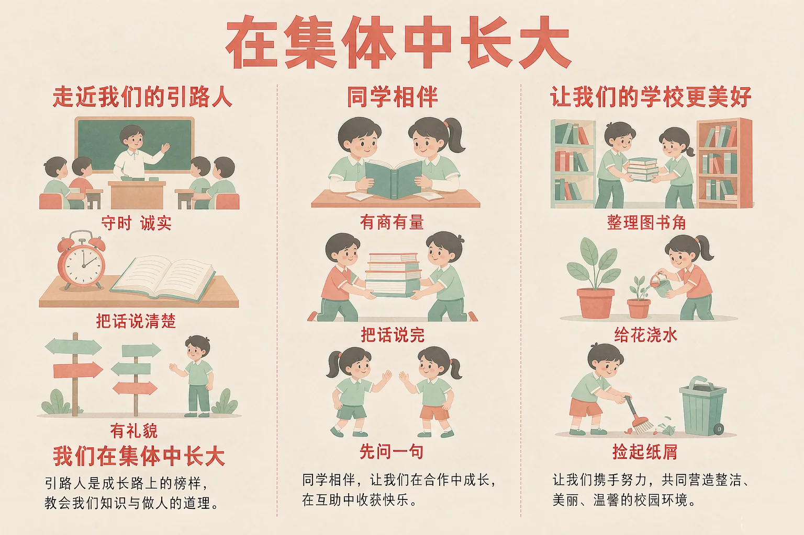
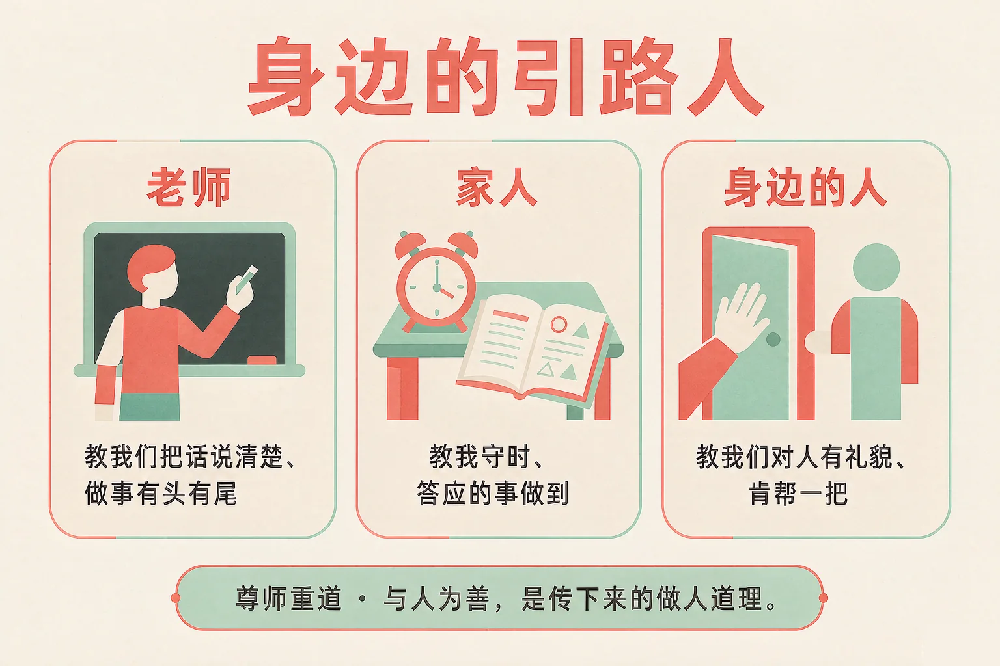
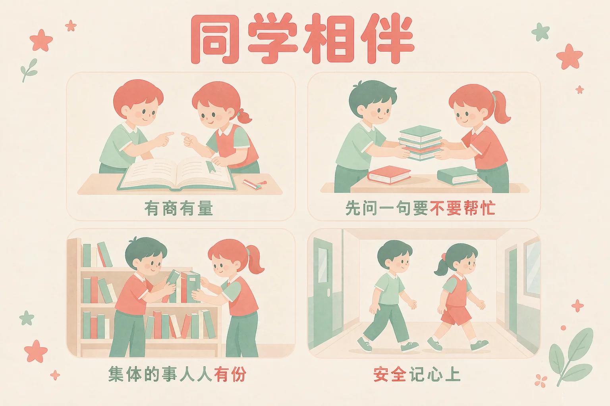

Gallery
v1.0.0 · skill v7.22.0
小学三年级 · 生命安全与健康
在班级这个集体里，是谁带你长大？你又为这个集体做过什么？

选一个你真正想知道的问题，后面的活动都会围着它转。
选择或输入后，这节课会围绕你的问题展开。
先凭直觉选一个，选完立刻看到解释——错了也没关系，正好知道要重点听哪里。
1. 下面哪些人算是我们身边的引路人？
引路人就是那些带我们往前走的人，他们教我们的时候，不只是在讲知识，也在教我们做事和做人。错因提醒：常见错误是误认为「引路人只有老师」——其实家里的大人、教练、邻居，甚至同学的一句提醒，都可能教给我们一点东西。
2. 两个人一起做一张手抄报，下面哪种开头比较好？
先把想法说清楚，两个人就有了共同的做法，后面的活才顺。错因提醒：有的同学误认为「一起做事就是各做各的、最后拼起来」——中间不说、不问，拼起来很容易对不上。
3. 在走廊里，几个同学追着跑着玩，你会怎么做？
走廊里人很多，追跑很容易撞到低年级的同学，也可能自己摔倒。错因提醒：容易把「大家玩得开心」误认为「这样做没关系」——集体里的安全，是每个人都要守的那一条线。
为什么要学这一课？
我们已经认识了很多老师和大人在帮我们，也习惯了他们每天提醒我们（And）；可是有时候我们只看见他们在「管」我们，没看见他们其实在教我们怎么做人做事（But）；所以这节课先走近引路人，看看他们到底把什么交给了我们（Therefore）。
引路人，就是那些带我们往前走的人。他们教我们的时候，常常不是在上课。
在学校里
老师讲一道题怎么算，也在教我们怎么把话说清楚；体育老师让我们把器材放回原处，是在教我们做事有头有尾。
在家里和身边
爸爸妈妈提醒我们按时起床，是在教我们守时；邻居阿姨帮着扶一下门，是在教我们待人客气。

这些道理，我们祖辈就在讲
古人说尊师重道，是说对教我们的人要有敬意；说与人为善，是说对人要和气、肯帮一把。这不是什么大道理，我们今天在班级里就能接着做：上课认真听，没听懂就举手问；见到老师问好；答应过的事做到；别人帮了你，说一句谢谢。
有的同学误认为「引路人的话必须句句照做，不能有自己的想法」。其实他们是在把做事做人的道理教给我们，遇到不懂的地方，你完全可以把自己的想法说出来问一问——会问，也是他们最希望看到的。
🔍 深层理解 换个角度再看一遍这件事，看看能不能说出背后的原理。
看见它：同一件事可以有两种看法：「老师又在管我」和「老师在教我怎么把事做好」。换一种看法，心里的感觉会完全不同。
解释它：为什么说这些道理是「传下来的」？因为尊师重道、与人为善不是哪个人发明的规矩，是一代一代人试出来、觉得好的做法，我们今天接着用。
迁移它：这套眼光在家里也用得上：妈妈让你把碗收进厨房，其实在教你做事有头有尾；爸爸让你自己定闹钟，是在教你守时。
先点一件在集体里常常遇到的事，再从三个做法里选一个。选得好会告诉你为什么，选得不太合适也会告诉你还可以试试什么。
先点一件可能遇到的事。
同学是我们每天相处时间最长的人。相伴得好，一天都会很轻松。怎么做？有四个很具体的做法。

让我们的学校更美好：三年级能做的小事
把自己负责的值日做完再一起检查 · 把图书角的书按类摆好 · 给教室的花浇一次水 · 看到走廊里的纸屑弯腰捡起来 · 上下楼梯靠右走、不推不挤 · 有新同学来，带他认一认教室和厕所的位置。
有的同学误认为「集体的事是大人的事，和我没关系」。可是班级是我们每天待的地方：书本我们自己摆、地面我们自己走、同学就在身边——这件事里，本来就有你的一份。
还有一件要紧的事：在集体里也要注意安全
上下楼梯不推挤、不追跑；体育课和实验课听老师指挥；看到危险先离开，再告诉老师；自己不舒服、被欺负了、心里难受，一定要说出来——说出来才是保护自己，也是保护身边的同学。
🔍 深层理解 换个角度再看一遍这件事，看看能不能说出背后的原理。
看见它：「有商有量」看起来只是多说了几句话，其实它决定了这件事是一个人扛，还是两个人一起扛。
比较它：同样是同学写字慢：一种是等一等、帮着理本子，一种是当众说他慢。两句话之后，两个人的一天会很不一样。
迁移它：这套做法在家里也管用：和弟弟妹妹争一件东西时，先把两个人的想法说一遍，往往就不用吵了。
你现在是小组长。先挑一个小组要做的任务，再从三种分工办法里选一种，看看接下来会发生什么。
先在上面点一个任务。
情境：老师让小宇和小禾一起出一张关于节约用水的手抄报，周五交。两个人平时不太熟，请你看看他们是怎么把这件事做下来的。
有的同学误认为「分工就是各做各的，最后拼在一起就行」。可是小宇和小禾中途发现时间不够，是说出来一起改才赶上的——不问不说，拼起来常常对不上。
说给同桌听：这四步里，哪一步最容易被忘掉？如果周五只能留一步，你会留哪一步？为什么？
先凭直觉选一个，选完立刻看到解释——错了也没关系，正好知道要重点听哪里。
1. 下面哪句话说得对？
引路人交给我们的，一半是知识，一半是做事的道理。错因提醒：常见错误是误认为「引路人的话必须句句照做」——遇到不懂的地方，把自己的想法说出来问一问，也是他们最希望看到的。
2. 小组一起做一件事，下面哪个做法更好？
先商量、按擅长分，中途有问题就一起改，事情才做得完也做得好。错因提醒：有的同学误认为「一个人做还快一些」——一个人做确实没人妨碍，但会来不及，别人也少了参与的机会。
3. 在班里被同学起了难听的外号，下面哪个做法更好？
说出来，是保护自己也保护同学的第一步；大人知道了才能帮上忙。错因提醒：容易把「忍一忍就过去了」当成懂事——忍着不说，事情常常不会自己变好。
先点一条做法，再点它应该进的筐：在集体里该做的放一边，要调整的放另一边。
先在上面点一条做法。
分完之后，想一想：
「在集体里该做的」这一边里，你最想先做哪一条？写在下面，再说一说为什么选它。
先凭直觉选一个，选完立刻看到解释——错了也没关系，正好知道要重点听哪里。
1. 两个同学吵起来，都来拉你评理，下面哪个做法更好？
先听完两边的话，才看得明白事情是怎么回事。错因提醒：常见错误是误认为「不管就是不吃亏」——这样可能让矛盾越闹越大，事后大家心里都不舒服。
2. 班会上你想提一个建议，下面哪个做法更好？
先说清楚再讲理由，大家更容易听明白，也更容易一起商量。错因提醒：有人把「说出来没人听」当成不说的理由——把建议说得具体一点，被听见的机会大得多。
3. 上下楼梯时，后面的同学挤着往前推，下面哪个做法最合适？
楼梯上推挤很危险，靠右慢走、提醒一句，是对大家最安全的做法。错因提醒：容易把「大家都这样走」误认为「这样做没关系」——集体里的安全，是每个人都要守住的那一条线。
一句口诀：先商量、把话听完，看到困难问一句，集体的事人人有份。
给别人讲一遍：请用「引路人、一起商量、我来做一件小事」这三个说法，说清楚你在集体里的一件事。
再动一动手：写一写你这周想为班级做的那一件小事，写清做什么、什么时候做。
三层练习，做完第一、二层就算通关；第三层留给愿意继续探索的同学。
⭐ 基础巩固（必做）
⭐⭐ 能力应用（必做）
⭐⭐⭐ 迁移挑战（选做）
左边是学它之前要先会的，右边是学会之后可以继续探索的，下面是同一领域的伙伴知识。
图谱正在加载：首次进入需下载知识索引（约 1–3 秒），加载完成后本行会自动消失。